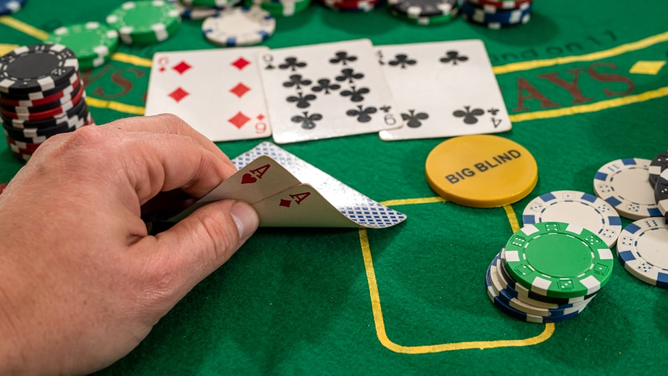
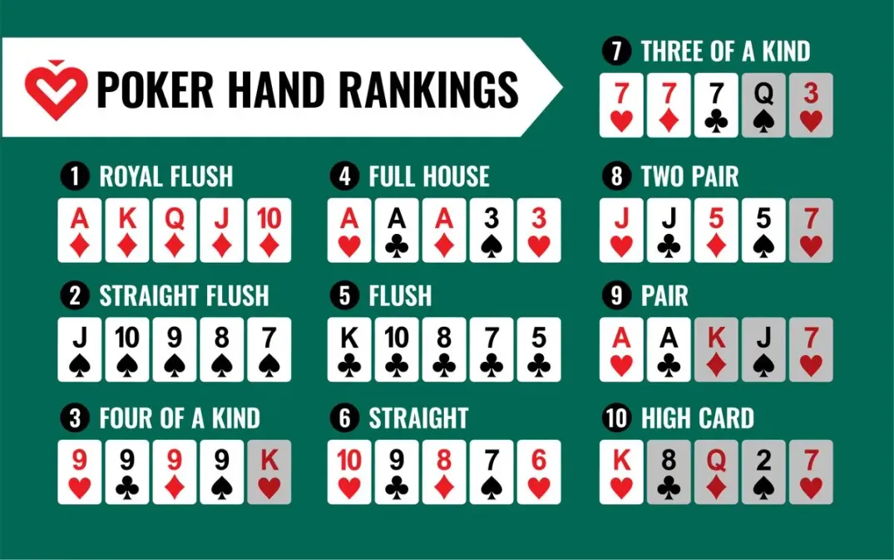
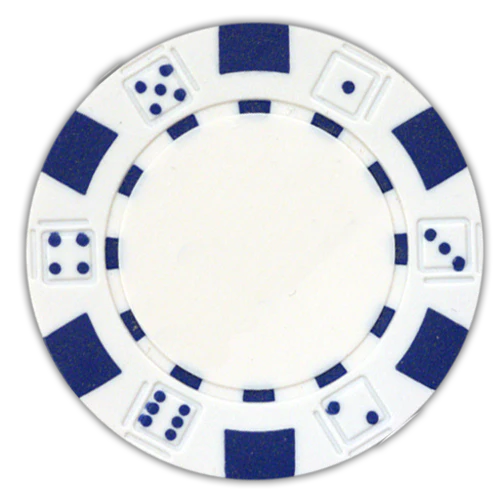
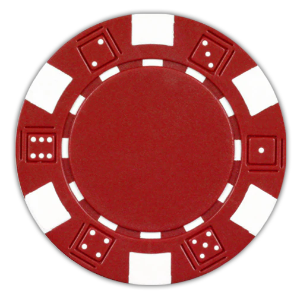
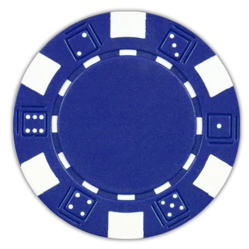
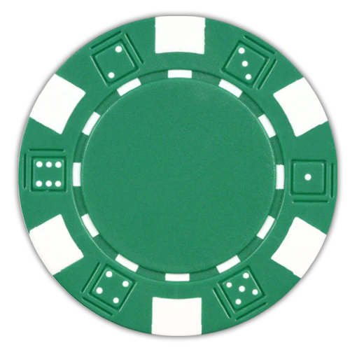
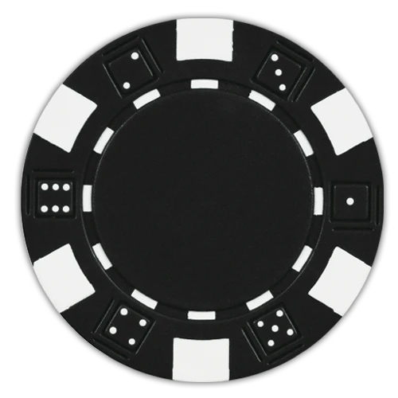

Bij de verschillende categorieën heeft elke categorie hun eigen karakteristieke mogelijkheden qua inzetten, bluffen en kaartopties. Binnen in elke categorie zijn er eindeloze spelvormen van poker, maar wij zullen binnen elke categorie enkel de populairste vormen uitleggen. Er zijn 3 categorieën nl. gemeenschapskaartpoker, draw en stud. In de categorie gemeenschapskaartpoker zit de bekendste pokervorm nl. Texas Hold'Em dat als 1ste wordt uitgelegd.
Bij gemeenschapskaartpoker, krijgen alle spelers eigen kaarten, maar er liggen ook kaarten in het midden die door alle spelers kunnen gebruikt worden om hun hand te maken. De bekendste variant is Texas Hold'em, die ik hier uitgebreid zal uitleggen:
Een willekeurige speler krijgt de dealerchip. Deze speler geeft iedereen 2 kaarten (met de klok mee, 1 kaart per keer, beginnend met de speler links van de dealer). De speler links van de dealer is de small blind. Deze zet verplicht de helft van een afgesproken minimuminzet in. De speler links daarvan is de big blind. Deze zet verplicht de volledige minimuminzet in. Nadat iedereen zijn kaarten heeft, begint de eerste inzetronde. Deze begint bij de speler links van de big blind, en gaat met de klok mee. In deze ronde kunnen spelers kiezen om te folden (niet meedoen met deze ronde), callen (gelijk maken aan de huidige inzet) of raisen (verhogen). De big blind heeft de minimuminzet al ingezet, dus deze kan kiezen om te checken (niet verhogen, maar wel in de ronde blijven) zolang er nog geen verhoging is geweest. Als iedereen behalve 1 speler heeft gefold, wint die speler automatisch de pot. Als er nog meerdere spelers over zijn na deze ronde, gaat het spel verder.
Nadat iedereen is overeengekomen over de inzet, legt de dealer 1 kaart weg (verbranden) en 3 kaarten open in het midden van de tafel (de flop). Hierna volgt een nieuwe inzetronde, analoog aan de eerste, maar deze keer begint de speler links van de dealer.
Als iedereen opnieuw is overeengekomen over de inzet, verbrandt de dealer deze keer 1 kaart en legt er 1 open naast de vorige 3 (de turn). Er volgt opnieuw een inzetronde, idem aan de vorige.
Als iedereen opnieuw is overeengekomen over de inzet, verbrandt de dealer deze keer 1 kaart en legt er 1 open naast de vorige 3 (de river). Er volgt opnieuw een inzetronde, idem aan de vorige.
Als de finale inzetronde is afgelopen, moet iedereen zijn kaarten laten zien. Als iemand in de laatste ronde heeft verhoogd, toont deze speler zijn kaarten als eerste. Anders toont de speler links van de dealer als eerste, daarna tonen de andere spelers hun kaarten met de klok mee. De speler met de beste hand wint de pot. Als er een gelijkspel is, wordt de pot gelijk verdeeld over de winnende spelers.
Als iemand gedurende het spel al zijn chips heeft ingezet (all-in), maar er nog meerdere spelers over zijn, wordt er een side pot gemaakt, die alle bijkomende verhogingen zal bevatten. De speler die all-in is kan alleen de main pot winnen, terwijl de andere spelers ook de side pot kunnen winnen.
De spelers krijgen allemaal een aantal kaarten die enkel zij kunnen zien. Ze moeten dus hun hand maken met deze kaarten. Bij 5-card draw, krijgen spelers 5 kaarten, en kunnen ze er tijdens een inzetronde een aantal weggooien en vervangen door even veel nieuwe kaarten van de dealer.
Stud poker is gelijkaardig aan draw poker, maar moeten de spelers een deel van hun persoonlijke kaarten openleggen. Bij 5 card stud, begint elke speler met 1 gesloten en 1 open kaart. Er volgen 3 inzetrondes, waarna elke speler telkens nog een open kaart krijgt. Ten slotte volgt nog 1 inzetronde en de showdown.
De chips is de munteenheid van poker. Hieronder is de conventie die wij gebruikten qua waarde en hoeveel je per soort krijgt in het begin van het spel.
Chip |
Waarde chip |
Starthoeveelheid |
|---|---|---|
 |
€1 | 10 |
 |
€5 | 5 |
 |
€10 | 4 |
 |
€25 | 1 |
 |
€100 | 0 |